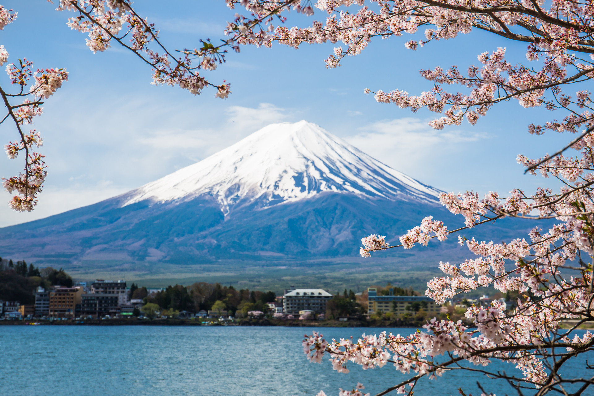
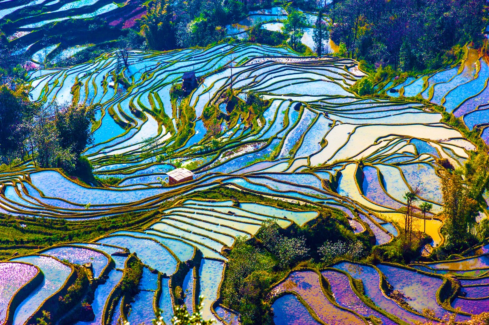
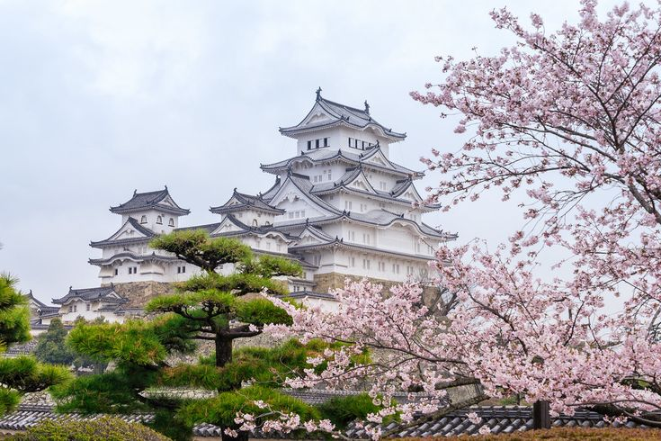
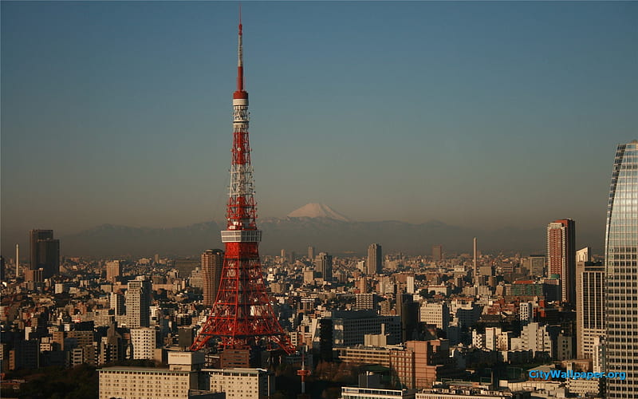
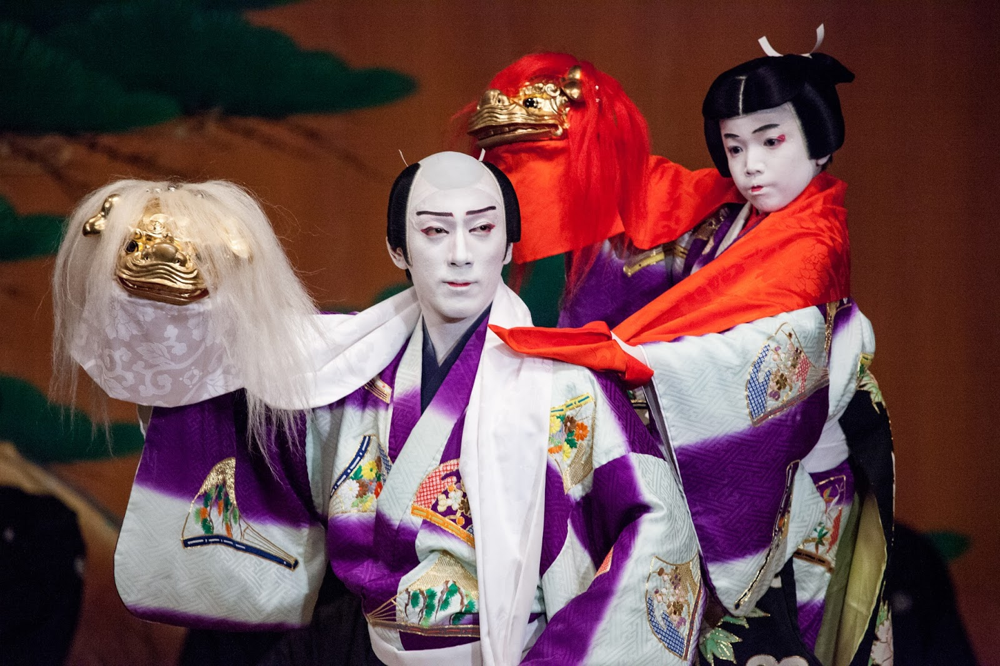
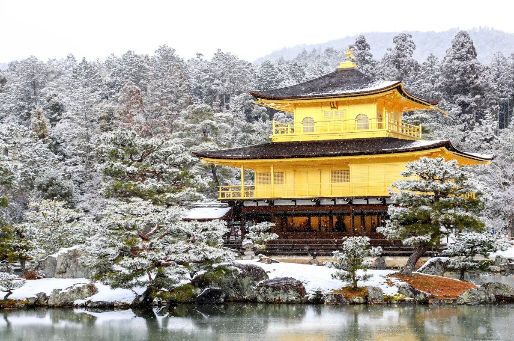
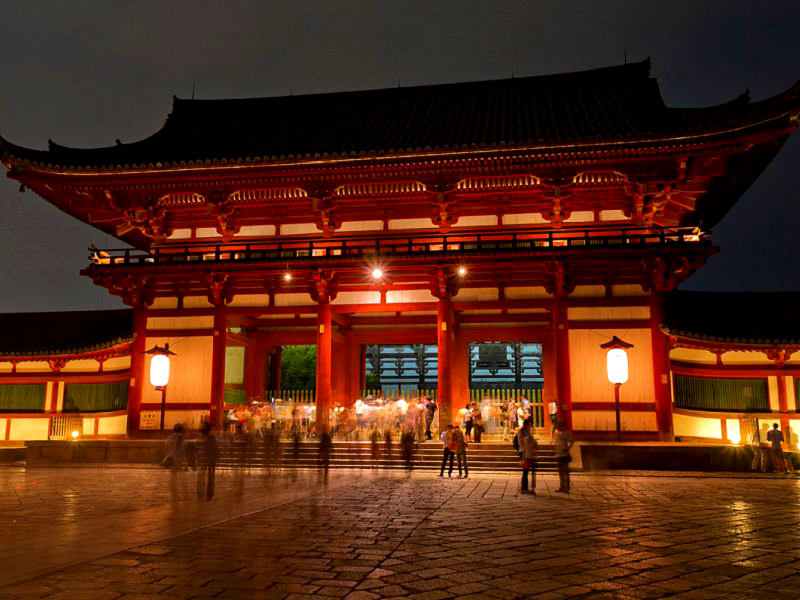
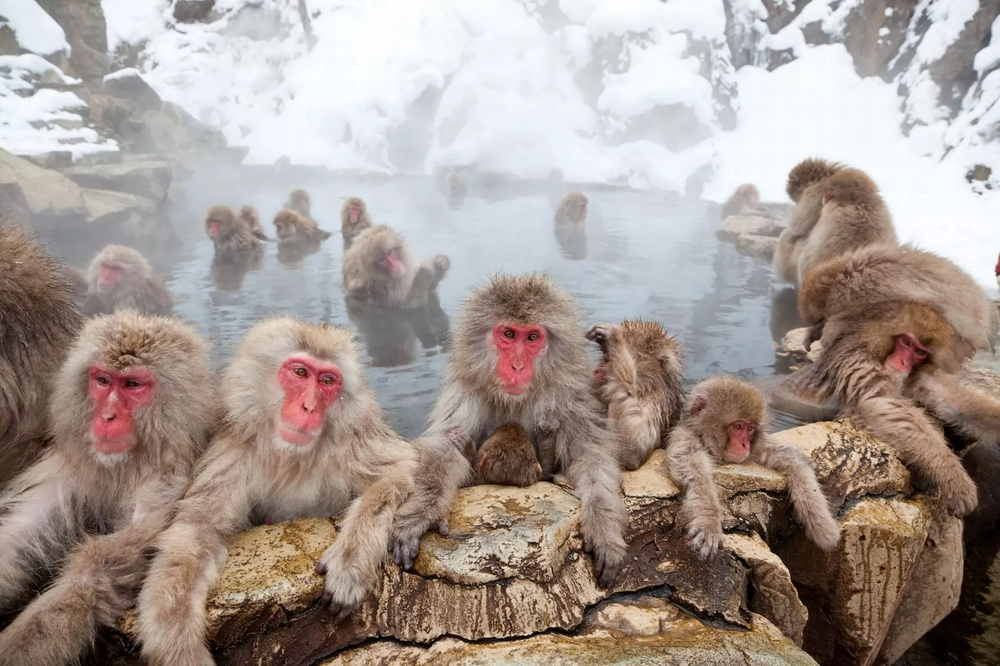

Гора Фудзияма
Подробнее
Гора Фудзияма, или Фудзи, — это не только самая высокая гора Японии (3776 метров), но и символ страны, олицетворяющий ее красоту и дух.
Культурное значение: Фудзи считается священной горой и важным объектом поклонения в японской культуре. Она изображена на многих произведениях искусства, включая знаменитые гравюры Хокусая.
Символ Японии: Гора Фудзи является одним из самых узнаваемых символов Японии и часто используется в рекламе, на открытках и в туристических материалах.
Восхождение: Сезон восхождения на Фудзи обычно длится с июля по сентябрь. Существует несколько маршрутов, наиболее популярные из которых — 5-й и 8-й маршруты. Восхождение может занять от 5 до 10 часов в зависимости от выбранного маршрута.
Наблюдение за восходом солнца: Многие туристы поднимаются на гору, чтобы встретить восход солнца, что считается незабываемым опытом. В этом случае лучше начать подъем ночью.
Национальный парк Фудзи-Хаконэ-Идзу: Гора Фудзи окружена живописными ландшафтами и природными достопримечательностями, такими как озера, горячие источники и леса. Парк предлагает множество возможностей для пеших прогулок и наслаждения природой.
Флора и фауна: В окрестностях горы можно встретить разнообразные виды растений и животных, включая редкие виды, занесенные в Красную книгу.
Рисовые террасы Сэммайда
Подробнее
Рисовые террасы Сэммайда (или Сенмайда) расположены в префектуре Ниигата на северо-востоке Японии. Это одно из самых живописных мест страны, известное своими ступенчатыми рисовыми полями, которые были созданы на склонах гор.
Уникальная архитектура: Террасы Сэммайда представляют собой более 1000 ступеней, которые были вырезаны в горных склонах для выращивания риса. Это создает потрясающий ландшафт, особенно в сезон роста, когда поля окрашиваются в яркие зеленые оттенки.
Культурное значение: Эти террасы являются не только сельскохозяйственным объектом, но и важной частью японской культуры. Они отражают традиционные методы ведения сельского хозяйства и гармонию человека с природой.
Туризм: Сэммайда привлекает множество туристов, особенно в сезон осеннего сбора урожая, когда террасы выглядят особенно живописно. Здесь также проводятся фестивали и мероприятия, посвященные рису.
Природа: Окружающая природа включает в себя живописные горные пейзажи, леса и реки, что делает это место идеальным для пеших прогулок и фотографирования.
Замок Химэдзи
Подробнее
Замок Химэдзи, также известный как «Белая цапля», расположен в городе Химэдзи, префектура Хиого, Япония. Он был основан в 1333 году и является одним из самых известных и хорошо сохранившихся замков в стране.
Архитектура:Замок Химэдзи знаменит своей великолепной архитектурой в стиле «дзюдзюцу» (японский замок), со своей белоснежной внешностью и сложными крышами. Главная башня (тэнсху) имеет 6 этажей и достигает высоты 46 метров, что делает ее одной из самых высоких в Японии.
Комплекс замка включает множество защитных стен, рвов и вспомогательных зданий.
История: Замок был основан в 1333 году, но его наиболее известная структура была построена в начале 17 века. Он служил стратегической крепостью и резиденцией для самураев, а также играл важную роль в защите региона.
Культурное значение: Является символом японской архитектуры и объектом Всемирного наследия ЮНЕСКО.
Туризм: Привлекает множество туристов, предлагая исторические экспозиции и панорамные виды.
Сохранение: Прошел несколько этапов реставрации для сохранения исторической ценности.
Замок Химэдзи — важный культурный памятник, отражающий богатое наследие Японии.
Токийская телебашня
Подробнее
Токийская телебашня (Tokyo Tower) — это одна из самых известных достопримечательностей Токио и символ японской столицы. Она была открыта в 1958 году и служит как телекоммуникационной, так и туристической целью.
Высота: Башня достигает высоты 333 метров, что делает её второй по высоте конструкцией в Японии после Токийского Skytree.
Архитектура: Токийская телебашня была спроектирована в стиле Эйфелевой башни и покрашена в яркий оранжевый и белый цвета для лучшей видимости для авиации.
Функции: Башня используется для передачи телевизионных и радиосигналов. Она также является популярной туристической достопримечательностью, предлагая смотровые площадки с захватывающим видом на город.
Смотровые площадки: На высоте 150 метров и 250 метров расположены смотровые площадки, откуда открывается панорамный вид на Токио и, в ясные дни, на гору Фудзи.
Туризм: Внутри башни находятся магазины, рестораны и выставочные пространства. Башня привлекает миллионы туристов каждый год.
Культурное значение: Токийская телебашня стала символом послевоенного восстановления Японии и её технологического прогресса.
Токийская телебашня — это не только важный объект инфраструктуры, но и значимая часть культурного и туристического облика Токио.
Театр Кабуки-дза в Токио
Подробнее
Театр Кабуки-дза (Kabukiza) в Токио — один из самых известных театров, посвящённых традиционному японскому кабуки. Открыт в 1889 году, он несколько раз перестраивался и обновлялся.
Местоположение: Район Гинза, Токио.
Архитектура: Совмещает традиционные элементы с современными удобствами.
Спектакли: Проводятся регулярно, можно увидеть как классические, так и современные постановки.
Культура: Является важным центром японского театрального искусства и привлекает как местных жителей, так и туристов.
Кабуки-дза — это не только театр, но и культурный символ Японии.
Xрам Кинкакудзи
Подробнее
Храм Кинкакудзи (Kinkaku-ji), также известный как Золотой павильон, — это один из самых известных и красивых храмов в Японии, расположенный в Киото. Он является объектом Всемирного наследия ЮНЕСКО и представляет собой выдающийся пример японской архитектуры и садового дизайна.
История: Храм был построен в 1397 году как загородная резиденция сёгуна Ашикаги Ёсимицы. После его смерти здание было преобразовано в буддийский храм школы риндзай.
Архитектура: Кинкакудзи состоит из трёх этажей, каждый из которых выполнен в своем стиле. Первый этаж выполнен в стиле японской традиционной архитектуры, второй — в стиле самурайских резиденций, а третий — в стиле китайского буддизма.
Сад: Храм окружён прекрасным садом, который был спроектирован в стиле «сухого ландшафта» (карасансуй). Сад включает в себя камни, мох и водные элементы, создавая гармоничную и спокойную атмосферу.
Пожары и восстановление: Храм несколько раз подвергался разрушению, в том числе в результате пожаров. Последнее восстановление произошло в 1955 году.
Туризм: Кинкакудзи привлекает миллионы туристов каждый год, которые приходят полюбоваться его красотой и спокойствием.
Кинкакудзи — это не только архитектурное произведение искусства, но и важный культурный символ Японии, отражающий её богатую историю и традиции.
Тодай-дзи
Подробнее
Тодай-дзи (с японского — «великий восточный храм») — древний буддийский храм в японском городе Нара.
История: Храм Тодай-дзи был основан в 752 году и служит важным центром буддизма в Японии. Он был построен по приказу императора Сёму и стал символом объединения Японии под буддизмом.
Архитектура: Храм знаменит своей грандиозной архитектурой. Главный зал, Нараку (Daibutsuden), является одним из крупнейших деревянных зданий в мире. Он был восстановлен в 1709 году после разрушительного пожара.
Культурное значение: Тодай-дзи является важным культурным и историческим памятником, и в 1998 году был включён в список Всемирного наследия ЮНЕСКО. Храм олицетворяет буддийскую философию и искусство Японии.
Туризм: Храм привлекает множество туристов и паломников, предлагая не только возможность увидеть величественные сооружения, но и насладиться окружающим парком Нара, где обитают свободно гуляющие олени.
Статуя БуддыВнутри храма находится огромная статуя Будды Дайбуцу (Daibutsu), высота которой составляет около 15 метров. Эта статуя считается одной из самых больших бронзовых статуй Будды в мире.
Храм Тодай-дзи остаётся не только важным религиозным центром, но и выдающимся примером японской архитектуры и культуры, который продолжает вдохновлять людей со всего мира.
Парк снежных обезьян Джигокудани
Подробнее
Местоположение: Парк находится в долине Джигокудани, окружённой высокими горами и лесами, что создаёт живописные пейзажи. Это место также является частью национального парка Нагано.
Поведение обезьян: Японские макаки известны своим уникальным поведением, включая купание в горячих источниках. Это помогает им сохранять тепло в холодные зимние месяцы, когда температура может опускаться ниже нуля.
Сезонность: Наиболее популярное время для посещения парка — зима, когда туристы могут наблюдать за обезьянами, наслаждающимися горячими источниками, покрытыми снегом. Летом обезьяны также активны, но их поведение меняется.
Экологический туризм: Парк предлагает отличные возможности для экотуризма и наблюдения за дикой природой. Посетители могут пройти по специально проложенным тропам и насладиться природой, а также узнать больше о жизни и поведении макак.
Джигокудани стал символом сохранения дикой природы и привлекает туристов со всего мира, желающих увидеть этих уникальных животных в их естественной среде обитания.
Гора Фудзияма
Подробнее
Гора Фудзияма, или Фудзи, — это не только самая высокая гора Японии (3776 метров), но и символ страны, олицетворяющий ее красоту и дух.
Культурное значение: Фудзи считается священной горой и важным объектом поклонения в японской культуре. Она изображена на многих произведениях искусства, включая знаменитые гравюры Хокусая.
Символ Японии: Гора Фудзи является одним из самых узнаваемых символов Японии и часто используется в рекламе, на открытках и в туристических материалах.
Восхождение: Сезон восхождения на Фудзи обычно длится с июля по сентябрь. Существует несколько маршрутов, наиболее популярные из которых — 5-й и 8-й маршруты. Восхождение может занять от 5 до 10 часов в зависимости от выбранного маршрута.
Наблюдение за восходом солнца: Многие туристы поднимаются на гору, чтобы встретить восход солнца, что считается незабываемым опытом. В этом случае лучше начать подъем ночью.
Национальный парк Фудзи-Хаконэ-Идзу: Гора Фудзи окружена живописными ландшафтами и природными достопримечательностями, такими как озера, горячие источники и леса. Парк предлагает множество возможностей для пеших прогулок и наслаждения природой.
Флора и фауна: В окрестностях горы можно встретить разнообразные виды растений и животных, включая редкие виды, занесенные в Красную книгу.